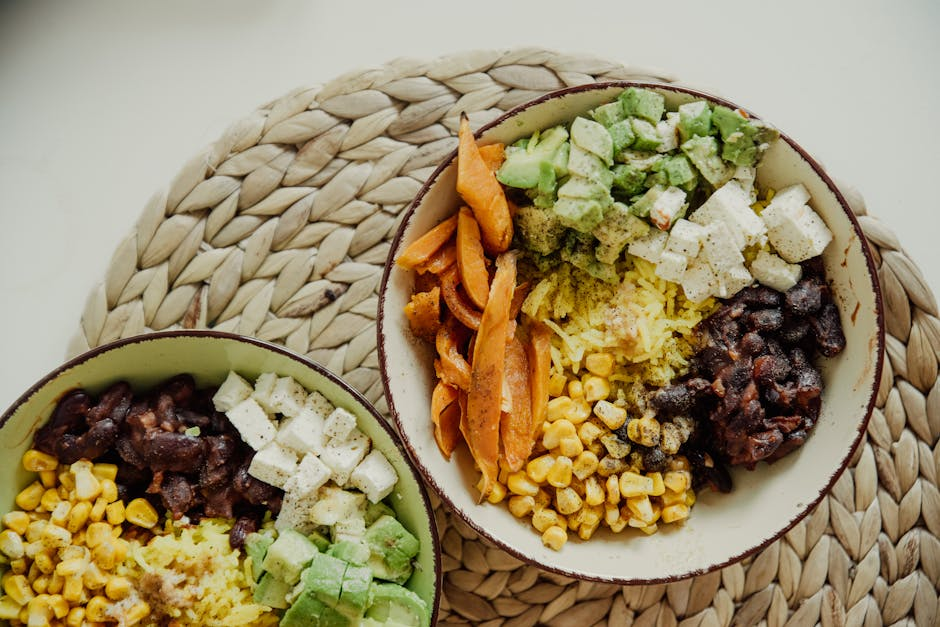

← Back to all nutrition guides | About Our Content
Realistic Diet Plan For Men Over 50
Reviewed by The Today's Food Coach Team
Our team of nutrition researchers and AI specialists ensures every guide is accurate and practical.
A realistic guide for busy professionals over 40.
Are you tired of feeling sluggish, frustrated by stubborn weight, and overwhelmed by meal planning? You’re not alone. Many men over 50 find it difficult to maintain a healthy diet with busy schedules and low energy. The endless cycle of dieting can feel exhausting, and counting calories or tracking foods is often the last thing you want to do. You deserve a straightforward way to eat healthily without the hassle of complicated plans or guilt over occasional indulgences. Let’s simplify this together, so you can focus on feeling better and enjoying life again.
Why This Is So Hard (And You're Not Crazy)
Life gets hectic, especially when you’re balancing work, family, and personal time. By the end of the day, you’re often too tired to think about whether you’re making the right food choices. It’s easy to fall back on old habits—grabbing fast food, skipping meals, or binge-eating junk when fatigue sets in. You might wonder why maintaining a healthy diet feels so tough. The reality is, with so much on your plate, making consistent, nourishing choices can feel impossible. You deserve a realistic plan that meets you where you are—busy and often too tired to care.
Want a personalized version of this strategy?
Try the AI Food Coach
Simple Strategy
- 1. **Prioritize Protein**: Make sure each meal includes a good source of protein—think eggs, chicken, or beans. This helps keep you full and satisfied without tracking every calorie.
- 2. **Simplify Snacks**: Keep healthy snacks on hand, like nuts or Greek yogurt. Grab them when you’re hungry instead of reaching for junk.
- 3. **Plan One Meal**: Choose one meal a week to prep in advance, like a big batch of chili or stir-fry. It makes lunch or dinner easier and healthier without extra work.
What This Looks Like
Imagine it’s Wednesday. You start your day with a quick coffee and a muffin from the shop on the way to work. At lunch, meetings run long, and you opt for takeout because you didn’t have time to pack anything. After a long day, you’re exhausted and end up ordering pizza instead of cooking. It’s normal to have days like this where time and energy just slip away. The key is to realize that you can still make healthier choices, even when life gets busy.Common Mistakes
- 1. **Skipping Meals**: Thinking missing meals will help you lose weight can lead to overeating later. It’s better to eat small meals regularly.
- 2. **Overcomplicating Choices**: More options don’t always mean better choices. Simplifying your meals helps reduce the stress of decision-making.
- 3. **Neglecting Hydration**: Low energy can often be mistaken for hunger. Not drinking enough water can lead to unnecessary snacking.
These strategies work best when personalized to your lifestyle and goals.
Stop Guessing What to Eat Every Day
Most people don’t fail because they don’t know what’s healthy. They fail because they’re busy, tired, and making decisions on the fly. Today’s Food Coach removes that friction by giving you a simple daily plan based on your goals.
Get Your Daily PlanRelated Nutrition Guides
- What To Eat At Night Instead Of Snacking
- What To Eat To Lose 20 Pounds Men Over 45
- Why Diets Stop Working After 40 Male
Why This Is Hard to Stick To
Knowing you need to eat better isn’t the problem; it’s deciding what to eat when life gets busy. Decision fatigue can derail even the best intentions. You might start strong but find it hard to stay consistent. Personalizing a meal plan can take that weight off your shoulders and help you stay on track without the grind of following strict rules. Let’s make eating well easier—discover how a tailored meal plan can fit seamlessly into your life.
Try Today's Food Coach
Generate a personalized meal strategy based on your lifestyle and goals.
Try the AI Food CoachFrequently Asked Questions
How do I start a meal plan without tracking calories?
Focus on including balanced meals with protein, low-carb veggies, and healthy fats without counting every calorie. Simple guidelines can steer your choices.
Can I eat out and still stick to my plan?
Absolutely! Look for meals that are predominantly protein and veggies. Don't hesitate to ask for adjustments to fit your goals.
How can I improve my energy levels?
Stay hydrated, eat balanced meals regularly, and consider incorporating short bursts of physical activity when you can. Small changes can make a difference!